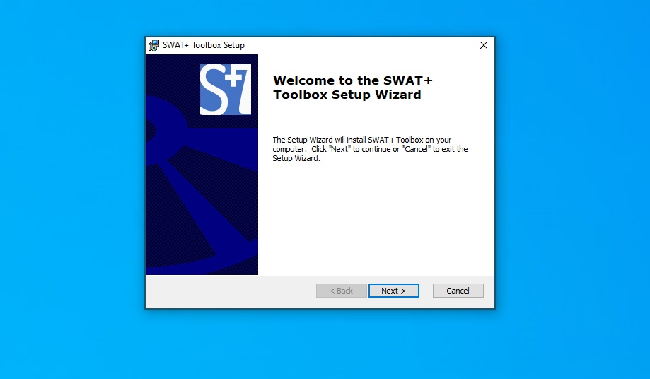

After downloading the installer, install normally using the default settings. Note that you will have to uninstall any previous versions before installing a new version.

Figure 1: Installation of the SWAT+ Toolbox Software
Once the last window apears, click Finish to Exit.